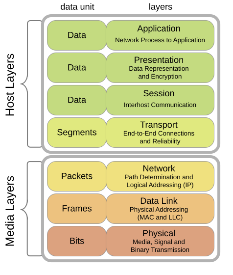
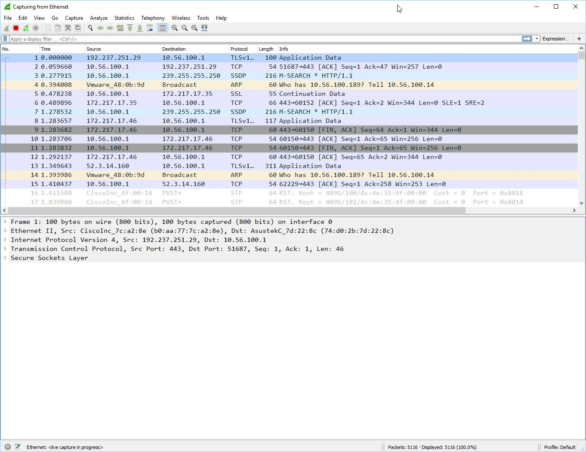
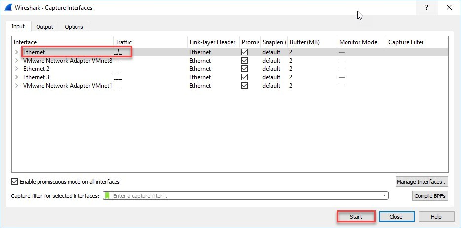
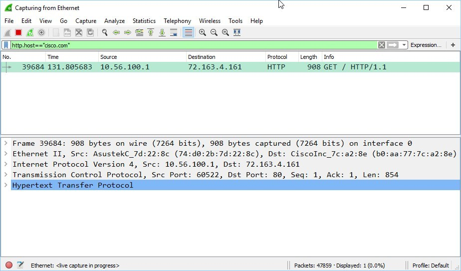

Introduction to the OSI Model
Quick recap quizاختبار مراجعة سريع
Why does the OSI Model exist?ليه أصلاً موجود نموذج OSI؟
In the beginning, the development of networks was chaotic. Each vendor had its own proprietary solution, and one vendor's solution was not compatible with another vendor's solution. This is where the idea for the OSI model was born: a layered approach where hardware vendors design hardware for the network, and others develop software for the application layer. Using an open model everyone agrees on means we can build networks that are compatible with each other.
To fix this problem the International Organization for Standardization (ISO) researched different network models, and the result is the OSI model, released in 1984. Nowadays most vendors build networks based on the OSI model, and hardware from different vendors is compatible.
The OSI model is not just a model to make networks compatible — it is also one of the best ways to teach people about networks, so you will see people refer to it a lot.
في الأول، تطوير الشبكات كان فوضى. كل شركة (vendor) كانت بتعمل حل خاص بيها، وحل شركة ما كانش بيشتغل مع حل شركة تانية. من هنا جت فكرة نموذج OSI: نقسّم الشبكة لطبقات، بحيث شركات الهاردوير تصمم للطبقة الفيزيائية، وشركات تانية تطوّر سوفت وير لطبقة التطبيقات. وبما إن الكل متفق على نفس النموذج المفتوح، أي جهاز من أي شركة يقدر يشتغل مع التاني.
عشان يحلوا المشكلة دي، منظمة ISO (International Organization for Standardization) بحثت في نماذج شبكات مختلفة، والنتيجة كانت نموذج OSI اللي طلع سنة 1984. دلوقتي أغلب الشركات بتبني شبكاتها على نموذج OSI، وهاردوير أي شركة بيشتغل مع هاردوير شركة تانية.
نموذج OSI مش بس بيخلي الشبكات متوافقة — هو كمان من أفضل الطرق اللي بتتعلم بيها الشبكات، فهتلاقي الناس بترجع له كتير.
The seven layersالطبقات السبعة

- Physical Layer: describes stuff like voltage levels, timing, physical data rates, physical connectors and so on. Everything you can touch is here, since it is physical.
- Data Link: makes sure data is formatted the correct way, takes care of error detection, and makes sure data is delivered reliably. Try to remember this is where Ethernetإيثرنت — تقنية الربط الشائعة في الشبكات المحلية lives. MAC Addressesالعنوان الفيزيائي لكرت الشبكة and Ethernet frames are on the Data Link layer.
- Network: takes care of connectivity and path selection (routingالتوجيه — اختيار أفضل مسار). This is where IPv4 and IPv6 live. Every network device needs a unique address on the network.
- Transport: takes care of transport. When you download a webpage, it is sent in segmentsأجزاء — وحدة بيانات طبقة النقل.
- TCP lives here; it is a protocol which sends data in a reliable way.
- UDP lives here; it is a protocol which sends data in an unreliable way.
- Session: takes care of establishing, managing and terminating sessionsالجلسة — اتصال منطقي مستمر بين جهازين between two hosts. A webserver is not serving just you, so it needs to keep track of all the different sessions.
- Presentation: makes sure information is readable for the application layer by formatting and structuring the data — e.g. making sure both computers agree on the same character set (ASCII vs EBCDIC).
- Application: here are your applications — email, browsing the web (HTTP), FTP and many more.
The four lower layers (Physical → Transport) are important for networking, and the upper three (Session, Presentation, Application) are about applications.
- Physical Layer: بتوصف مستويات الفولت، التوقيت، معدلات نقل البيانات، والموصلات. أي حاجة تقدر تلمسها فيزيائيًا موجودة هنا.
- Data Link: بتتأكد إن البيانات متنسقة صح، بتكتشف الأخطاء، وبتضمن توصيل البيانات بشكل موثوق. افتكر إن هنا تعيش Ethernet. عناوين MAC وEthernet frames في الطبقة دي.
- Network: مسؤولة عن الاتصال واختيار المسار (routing). هنا يعيش IPv4 وIPv6. كل جهاز محتاج عنوان فريد على الشبكة.
- Transport: مسؤولة عن النقل. لما تنزّل صفحة ويب، بتتبعت على هيئة segments.
- TCP هنا؛ بروتوكول بينقل البيانات بشكل موثوق.
- UDP هنا؛ بروتوكول بينقل البيانات بشكل غير موثوق.
- Session: مسؤولة عن إنشاء وإدارة وإنهاء الجلسات بين جهازين. أي سيرفر بيخدم ناس كتير مش أنت بس، فمحتاج يفرّق بين كل الجلسات.
- Presentation: بتتأكد إن المعلومة قابلة للقراءة لطبقة التطبيقات — مثلاً تتأكد إن الجهازين متفقين على نفس ترميز الحروف (ASCII أو EBCDIC).
- Application: هنا تطبيقاتك — الإيميل، تصفح الإنترنت (HTTP)، FTP وغيرهم.
الطبقات الأربع تحت (Physical → Transport) مهمة لـالشبكة، والتلاتة اللي فوق (Session, Presentation, Application) خاصة بـالتطبيقات.
Two ways to remember the orderطريقتين تفتكر بيهم الترتيب
All People Seem To Need Data Processing — top to bottom (Application to Physical):
| Letter | Layer |
|---|---|
| A | Application |
| P | Presentation |
| S | Session |
| T | Transport |
| N | Network |
| D | Data Link |
| P | Physical |
People Do Need To See Pamela Anderson — bottom to top (Physical to Application), which the source says normally gives more smiles when teaching CCNA in class:
| Letter | Layer |
|---|---|
| P | Physical |
| D | Data Link |
| N | Network |
| T | Transport |
| S | Session |
| P | Presentation |
| A | Application |
You can never skip a layer in the OSI model — it is impossible to jump from the Application layer directly to the Network layer. You always go through all the layers to send data over the network.
All People Seem To Need Data Processing — من فوق لتحت (Application لـ Physical):
| الحرف | الطبقة |
|---|---|
| A | Application |
| P | Presentation |
| S | Session |
| T | Transport |
| N | Network |
| D | Data Link |
| P | Physical |
People Do Need To See Pamela Anderson — من تحت لفوق (Physical لـ Application)، والمرجع بيقول إنها بتضحك الطلاب في الكلاس:
| الحرف | الطبقة |
|---|---|
| P | Physical |
| D | Data Link |
| N | Network |
| T | Transport |
| S | Session |
| P | Presentation |
| A | Application |
مينفعش تقفز طبقة في نموذج OSI — مستحيل تروح من Application على طول لـ Network. لازم تعدي بكل الطبقات عشان تبعت بيانات على الشبكة.
A real example: loading a webpageمثال حقيقي: تحميل صفحة ويب
- You start your browser and type a URL. Your computer sends a message to the web server requesting a page — you are using the HTTP protocol, which lives on the application layer.
- The presentation layer will structure the information of the application in a certain format.
- The session layer will make sure to separate all the different sessions.
- Depending on the application, you want a reliable (TCP) or unreliable (UDP) protocol — here it will choose TCP since you want the webpage to make it to your computer.
- Your computer has a unique IP address (e.g. 192.168.1.1) and builds an IP packet containing the data of the layers above, the transport protocol used, the source IP and the destination.
- The IP packet is put into an Ethernet frame with a source MAC address (your computer) and destination MAC address (the web server).
- Finally, everything is converted into bits and sent down the cable using electric signals.
Again, you cannot skip any layer of the OSI model — a real-life story converted to networking terms is the postal service:
- You write a letter.
- You put the letter in an envelope.
- You write your name and the receiver's name on the envelope.
- You put the envelope in the mailbox.
- The mailbox contents go to the postal service's central processing office.
- Your envelope is delivered to the receiver.
- They open the envelope and read its contents.
If you put your letter directly in the mailbox without an envelope, it will not be delivered. Going from the application layer all the way down to the physical layer is called encapsulationالتغليف — إضافة معلومات كل طبقة حوالين البيانات وهي نازلة. Going from the physical layer back up to the application layer is called de-encapsulationفك التغليف — إزالة معلومات كل طبقة وهي طالعة.
- بتفتح المتصفح وتكتب رابط. جهازك بيبعت رسالة للسيرفر يطلب صفحة — إنت بتستخدم بروتوكول HTTP اللي عايش في طبقة Application.
- طبقة Presentation بتنظم معلومة التطبيق بصيغة معينة.
- طبقة Session بتفصل بين كل الجلسات المختلفة.
- حسب التطبيق، هتختار بروتوكول موثوق (TCP) أو غير موثوق (UDP) — هنا هيختار TCP عشان يضمن وصول الصفحة.
- جهازك له IP فريد (زي 192.168.1.1) وهيبني IP packet فيه بيانات الطبقات اللي فوق، وبروتوكول النقل المستخدم، وIP المصدر والوجهة.
- الـ IP packet بيتحط جوه Ethernet frame فيه MAC مصدر (جهازك) وMAC وجهة (السيرفر).
- وأخيرًا كل حاجة بتتحول لـ bits وتتبعت في الكابل بإشارات كهربية.
تاني، مينفعش تقفز أي طبقة في OSI — قصة واقعية بلغة الشبكات هي خدمة البريد:
- تكتب خطاب.
- تحطه في ظرف.
- تكتب اسمك واسم المستلم على الظرف.
- تحط الظرف في صندوق البريد.
- محتوى الصندوق بيروح لمكتب البريد المركزي.
- الظرف بيتوصّل للمستلم.
- بيفتح الظرف ويقرا المحتوى.
لو حطيت الخطاب في الصندوق من غير ظرف، مش هيتوصل. النزول من Application لحد Physical اسمه encapsulation (التغليف). الصعود من Physical لحد Application اسمه de-encapsulation (فك التغليف).


PDU names per layerأسماء وحدة البيانات في كل طبقة
During peer-to-peer communication, each layer has packets of information — we call these Protocol Data Units (PDU). Every layer gives its unit a different name:
| Layer | PDU name | Example |
|---|---|---|
| Transport | Segments | TCP segments |
| Network | Packets | IP packets |
| Data Link | Frames | Ethernet frames |
This is just terminology, so do not mix up talking about IP frames and Ethernet packets.
في الاتصال بين طبقتين متناظرتين، كل طبقة عندها طرود معلومات — بنسميها Protocol Data Units (PDU). كل طبقة بتدّي وحدتها اسم مختلف:
| الطبقة | اسم الـ PDU | مثال |
|---|---|---|
| Transport | Segments | TCP segments |
| Network | Packets | IP packets |
| Data Link | Frames | Ethernet frames |
دي تسميات بس، فماتلخبطش تقول IP frames أو Ethernet packets.
Seeing the layers in Wiresharkشوف الطبقات فعليًا في Wireshark
Wiresharkأداة مجانية لالتقاط وتحليل حزم الشبكة is a network capture tool that lets us capture all packets entering and exiting our computer. The source downloads it, starts a capture, then opens a filter:
Wireshark أداة مجانية بتسمحلك تلقط كل الحزم الداخلة والخارجة من جهازك. المرجع بينزّلها، يبدأ capture، وبعدين يفتح فلتر:
Then opens http://cisco.com in the browser. A single packet shows up with the request, and the bottom half of Wireshark breaks it into: an Ethernet II section (layer 2, showing source/destination MAC and that it contains an IPv4 packet), an Internet Protocol v4 section (layer 3, source/destination IP), a Transmission Control Protocol section (layer 4, using TCP), and a Hypertext Transfer Protocol section (layer 7 — a GET request and the User-Agent). Note that a separate Session or Presentation layer is not shown — that is normal.
وبعدين بيفتح http://cisco.com في المتصفح. حزمة واحدة بتظهر فيها الطلب، والنص السفلي من Wireshark بيقسّمها لـ: قسم Ethernet II (طبقة 2، فيه MAC مصدر ووجهة وإنه فيه IPv4 packet)، قسم Internet Protocol v4 (طبقة 3، IP مصدر ووجهة)، قسم Transmission Control Protocol (طبقة 4، مستخدم TCP)، وقسم Hypertext Transfer Protocol (طبقة 7 — طلب GET والـ User-Agent). لاحظ إن مفيش قسم منفصل لـ Session أو Presentation — وده طبيعي.

Summaryملخص الدرس
- OSI Model = 7 layers, from Physical (1) to Application (7).
- You can never skip a layer — encapsulation going down, de-encapsulation going up.
- Each layer has a different PDU name: Segments (L4), Packets (L3), Frames (L2).
- Wireshark shows these layers actually at work in any packet sent from your computer.
- نموذج OSI = 7 طبقات، من Physical (1) لحد Application (7).
- مينفعش تقفز طبقة أبدًا — encapsulation نازل، de-encapsulation طالع.
- كل طبقة لها اسم PDU مختلف: Segments (L4)، Packets (L3)، Frames (L2).
- Wireshark بيوري الطبقات دي فعليًا شغالة في أي حزمة من جهازك.
🧠 Lesson quiz🧠 اختبار الدرس
Wrong = red, correct = green. Reveal the answer any time and translate any question with the 🌐 button.غلط = أحمر، صح = أخضر. تقدر تشوف الإجابة في أي وقت وتترجم أي سؤال بزرار 🌐.